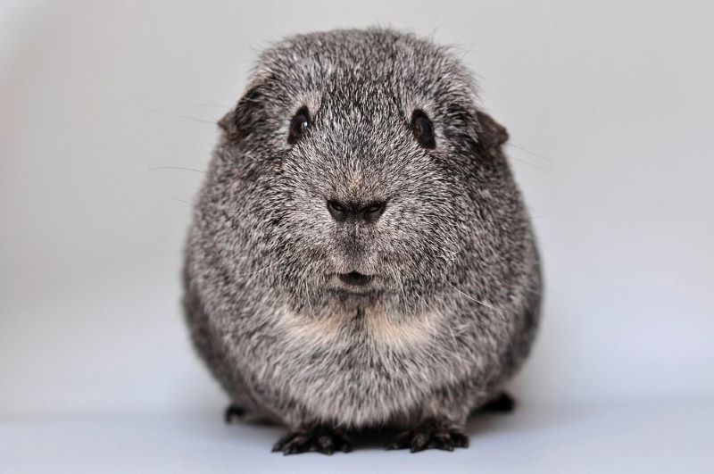

Hello!
My name is Varsha Kumar and this is my three things project for CSIT 121 this fall semester. I'm a private person and I would like to not talk about my life. In my free time, I like to draw, paint, and read and that's what I'll be sharing about myself today. My favorite animal is a guinea pig and that's all the personal information that I'm willing to share.
